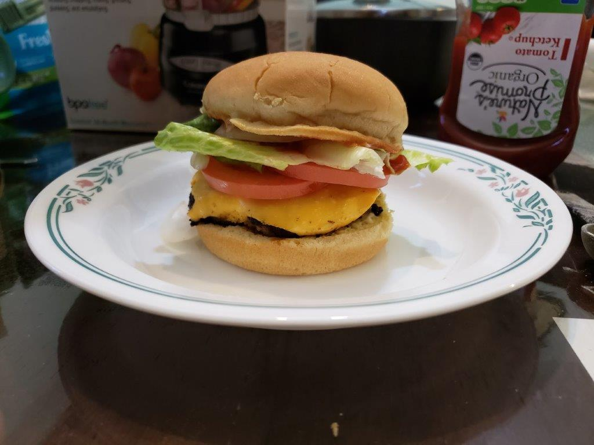

Hamburger

Ingredients:
Burger Patty:
- 2 lb Ground beef, 80/20
- 1/2 cup Crushed saltine crackers, or Panko breadcrumbs
- 1 Large egg
- 2 tbsp Milk
- 2 tbsp Worcestershire sauce
- 1 tsp Salt
- 1 tsp Onion powder
- 1 tsp Garlic powder
- 1/4 tsp Black pepper
Recommended Toppings:
- Hamburger buns
- Mayonaise
- American cheese slices
- Tomatoes, thinly sliced
- Onion, thinly sliced
- Lettuce, chopped
- Ketchup
Instructions:
- In a large bowl, add in the ground beef, crushed crackers, egg, Worcestershire sauce, milk, salt, garlic powder, onion powder, and pepper. Mix by hand until the meat mixture is very smooth.
- Press the meat down in the bowl, into an even disk. Use a knife to cut and evenly divide the hamburger patty mixture into 6 large patties, or 12 thin patties. Shape them just slightly larger than the buns being used, to account for shrinkage during cooking.
- Heat a greased pan over medium heat. For thick patties, fry the for 3-4 minutes per side. For thin patties, fry for 2 minutes per side. If using cheese, place over the patty after the first flip.
- Place into the hamburger buns along with any preffered toppings.